Design and make a model of a machine to crush grain
Figure 1: How do mielies become maize
meal?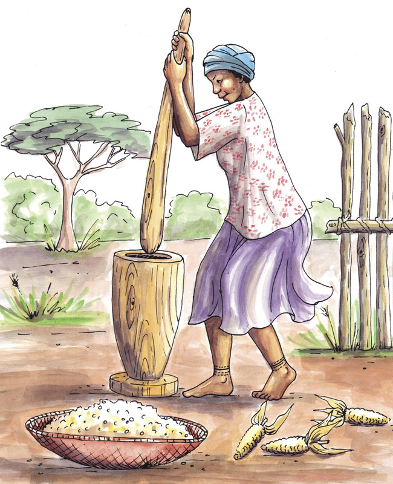
Figure 2: Before
machines were invented to grind or crush the mielie seeds, it
took a lot of hard work to make maize meal.individual work.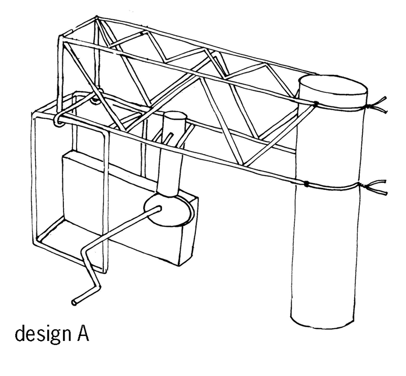
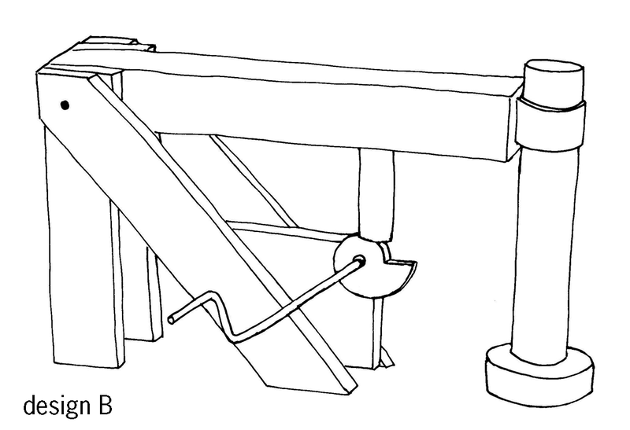
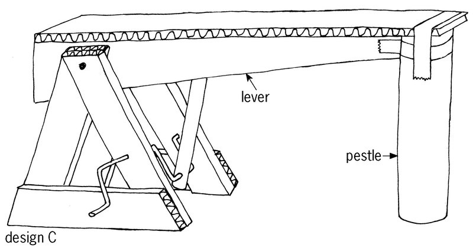
Figure 3: Rough designs made by other
people
How
strong and stable is the structure?
What
materials and tools do you need to make the structure?
How easy
will it be to make the structure?
How hard
and fast will the pestle hit the floor?
What is
the mechanical advantage of the lever?
You will be accessed on
the last two rows of the table, on advantages and
disadvantages.
Design
A
Design
B
Design
C
Strength and stability of
structure
Materials and tools needed
How easy to make?
How hard and fast will the
pestle hit the floor?
Mechanical advantage of
lever
Advantages
Disadvantages
teams of three or four. There
should be at least one boy and one girl in each group. Everyone
has to write their own answers below.
Write the
design brief. A
design brief tells you what the problem is and who will benefit
from or use the solution. (1)
A machine to crush
grain will usually be powered by an electrical motor that
provides rotational movement. You will not use an electrical
motor in your model, but will rather turn the handle of a crank
by hand. This rotational movement should be changed into a
reciprocating movement so that the grain will be crushed, like
hitting it with a hammer.
The mechanisms that
your model uses should be housed inside a strong and stable
structure.
Answer the
following questions to identify the specifications for your
design:
What different
mechanisms could make the grain crusher work? (1)
What forces
should the structure be able to withstand? (1)
Identify the
constraints:
How much time do I
have to design and make the model? (1)
What materials
can I find easily to build the model? (1)
What tools do I
already have with which I can make the model? (1)
Figure 4: A structure for a grain
crusher that is not strong or stable enough to withstand forces
acting on its side.
Make a rough sketch
below of your plan to strengthen the structure.Each person in
your team should make their own sketch of their own idea.Add
notes and labels to the sketch to explain your design.(4)
Compare the rough
designs of everyone in your team. Then decide together on what
design you will use to strengthen the structure. Make a neat
sketch of this design in the space below. Add notes and labels
to the sketch to explain the design. (4)
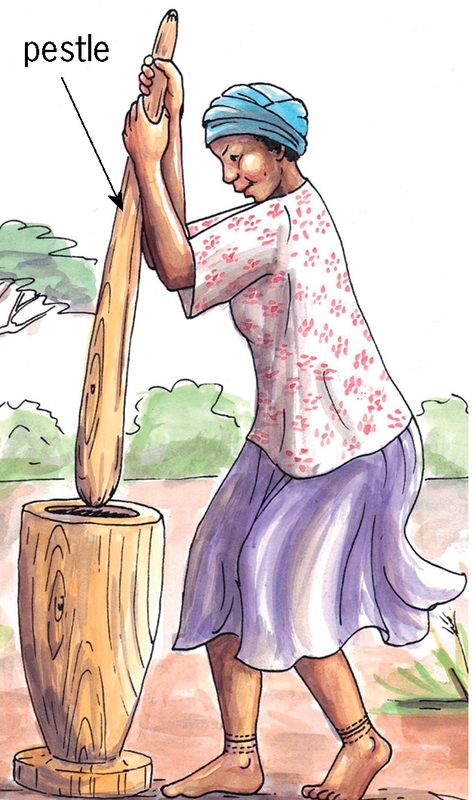
Figure 5Figure 6:
Different mechanisms that you can choose from to change
rotational movement into reciprocating movement
What mechanism did
you choose, and why?
The photo
below shows what the model will looklike before you make your changes.
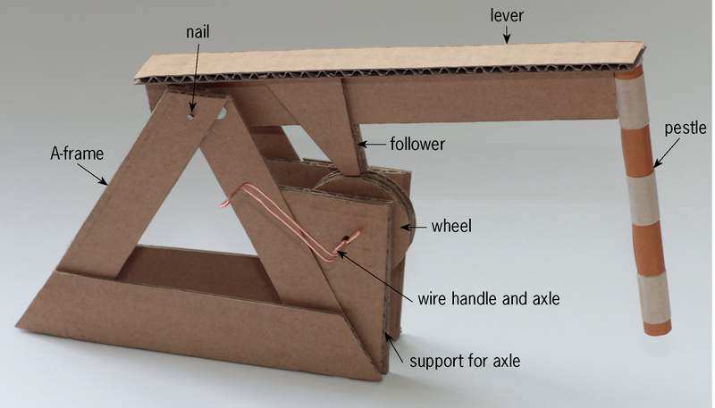Figure 7corrugations are in the correct
direction, as shown by the arrows on the drawings.
Corrugations are like
tunnels between the two outer layers of the cardboard.
Corrugated cardboard is stronger in the one direction than in
the other.
Figure 8: The parts of one of the
two
A-frames with its support for the axle.Figure 9: The parts of the lever,
and the follower for the cam that will be attached to
itFigure 10: Three different shapes
of cams to choose fromFigure 11: Spacers to use on
axlesHow to attach the parts of your
modelOther materials that you will
need
Safety warning
Do not remove any copper
wire from electrical wiring. If you do this, you can be
shocked to death, and other people won't be able to use
electricity before the wires are fixed. You can also go to
jail for stealing electrical wire.
Unwanted sideways movement on an
axle
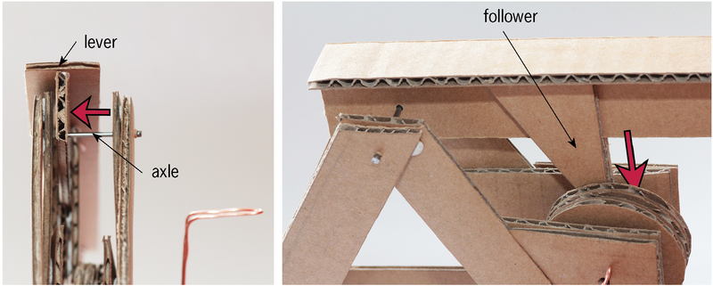
Figure 13Mark allocation
You
followed the plans and instructions successfully. (4)
You made
a mechanism to change the rotational movement of thehandle
into the reciprocating movement of the pestle.(3)
The parts
that turn on axles cannot move sideways. (2)
Your
model works well. (3)
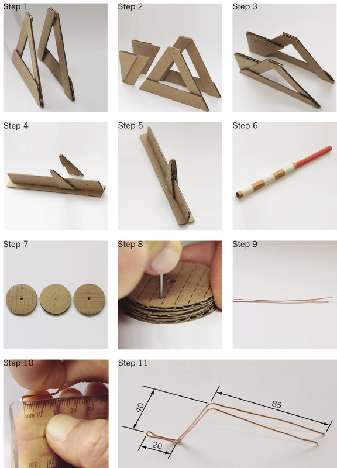
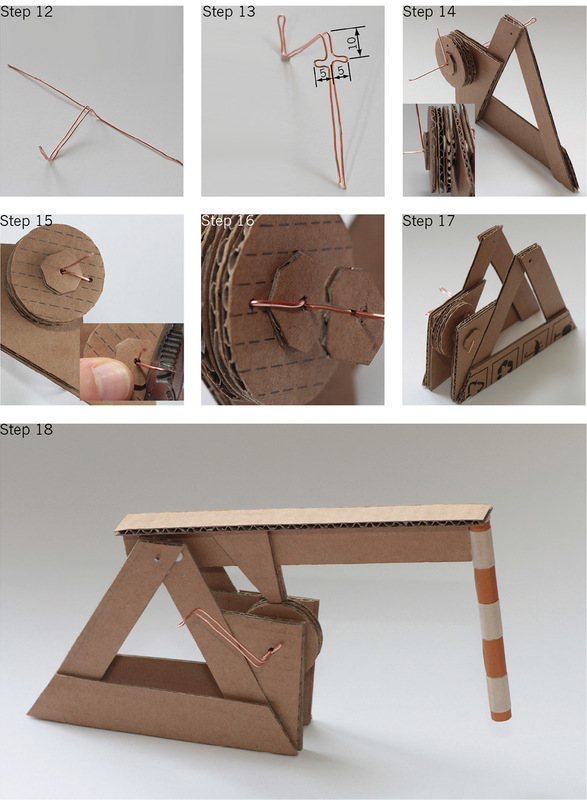
Figure 12:
Different steps of building the modelindividual work.
Make a working
drawing in 2D of what you will add to the structure so that it
cannot collapse or topple over.
The
drawing accurately shows the design you that sketched on page
92. (2)
The
drawing shows all important dimensions. (2)
The
drawing is to scale, and the scale is shown. (1)
The
drawing shows all hidden lines. (1)
Make a 3D isometric
drawing of what you will add to the structure Use a ruler.
The
drawing accurately shows the design you that sketched on page
92. (2)
The
drawing shows the dimensions in the correct way. (3)
The
drawing is to scale, and the scale is shown. (1)
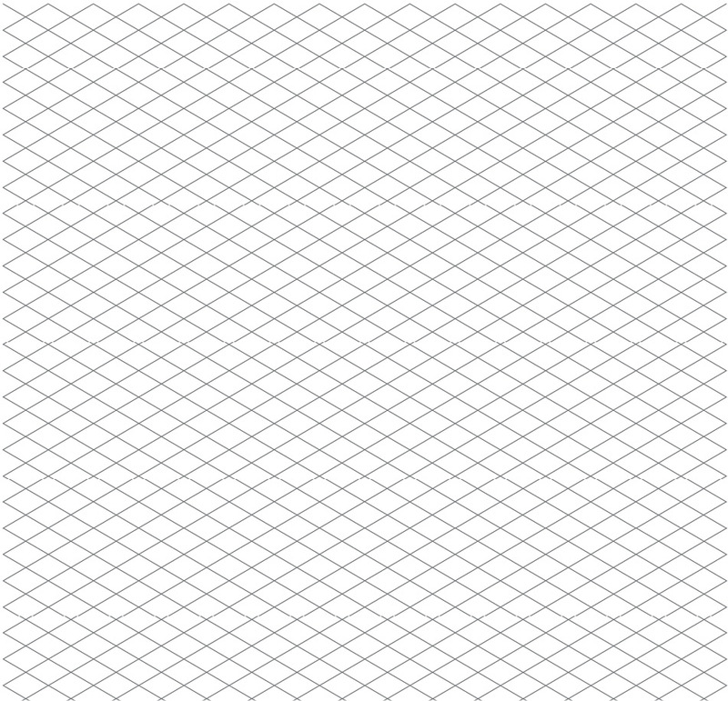individual work, although team
members may help one another by sharing ideas.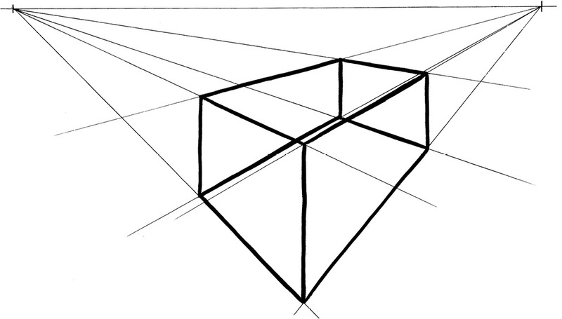
Figure 14: Looking
at a
rectangular frame from up closeInstructions for making the
drawinghidden lines. After
you have drawn all the outlines, use shading to make the
sketch look more realistic. Hint: look back at what you
learnt in Chapter 4 about shading.
The following principle of perspective will help you
to make the free-hand sketch:
Things look smaller the further away they are.
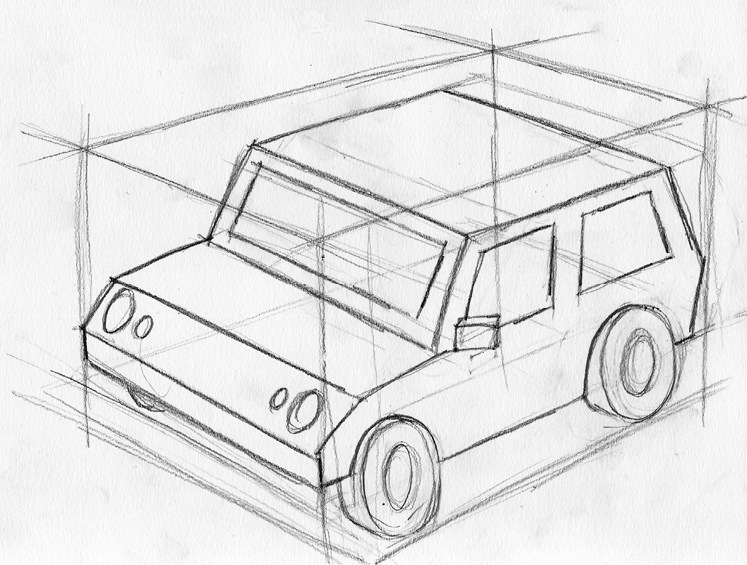
Figure 15: Making
a double vanishing point perspective sketch of a complicated
object
Put
this page on a large piece of newspaper. Make the lines of
the rectangular frame longer to see where the vanishing
points are.
Mark allocation
It is
easy to understand what the drawing shows. (3)
You first
made a rough sketch before you made your final drawing.
(2)
You drew
a rectangular box in which your model will fit, using feint
linesfor visible and hidden lines. (1)
You drew
the box in double vanishing point perspective, using
vanishingpoints that are far away and not on the paper.
(2)
You
showed all your construction lines as feint lines. (1)
You
showed the outlines of your model as dark lines. (1)
You used
shading to make the sketch look realistic. (2)
Leave your model with the Technology
teacher over the weekend. Do not take it home.